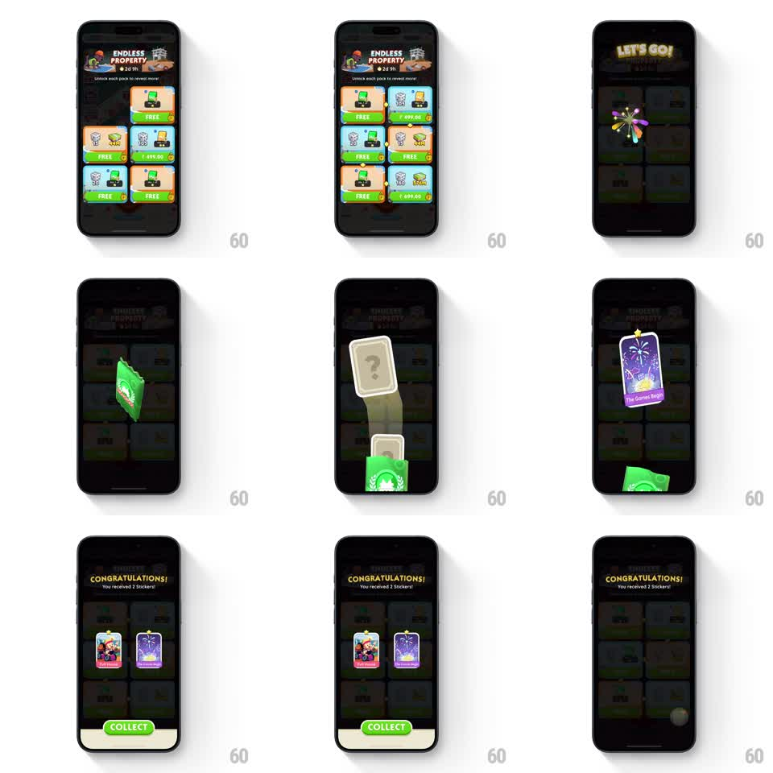

Media
Frame-by-frame

Rebuild this interaction 1:1: Monopoly Go's free-sticker pack - the pack flies to center stage, pops open in a light burst, cards flip out in 3D one by one, then collect toward the album with a scaling flight.

Rebuild this interaction 1:1: Monopoly Go's free-sticker pack - the pack flies to center stage, pops open in a light burst, cards flip out in 3D one by one, then collect toward the album with a scaling flight.
## Integration
Integration: stack-agnostic spec - springs given as stiffness/damping, timed motions as duration + curve; map every value to your framework and animation library of choice.
## Scene
"ENDLESS PROPERTY" store panel with FREE packs. Claim stage: "LET'S GO!" headline as a green sticker pack flies to center. The pack opens in a radial light burst; a mystery card (question-mark back) lifts out and flips to reveal a sticker ("The Grandest Eve..." purple fireworks art with a star). End card: "CONGRATULATIONS! You received 2 Stickers!" with both stickers side by side and a green "COLLECT" pill.
## Motion spec
Pattern: pack-flight unboxing with 3D card flips.
- Tap the FREE pack: it lifts out of the grid and flies to screen center (400ms, ease-out arc) growing from thumb to full size.
- "LET'S GO!" pops above (scale 0.7 to 1.1 to 1.0, 250ms) and the pack bursts in a radial light flash with a small confetti scatter.
- The mystery card rises from the pack (spring, stiffness ~300, damping ~20), hangs face-down a beat (~300ms), then flips (rotationY 180 to 0, 400ms) to reveal the sticker with a star pop.
- Repeat per sticker; each revealed card parks to the side as the next lifts.
- The Congratulations banner drops in (spring, small bounce) with the cards arranged in a row; COLLECT slides up.
- Tap COLLECT: each sticker scales down and flies toward the album icon (staggered 100ms, 450ms ease-in arcs), the screen fading back to the store.
## Calibration
- The face-down beat builds the reveal; flipping immediately wastes the mystery card.
- Flight-to-album sells collection - cards simply fading out loses the "it went into my album" causality.
## Reduced motion
Pack fades open, cards crossfade revealed, collect is a fade.
## Don't miss
- Cards have depth during the flip (edge visible mid-rotation); a flat 2D flip reads as a crossfade.
- The star rating sits on the card's top edge and pops after the flip lands.